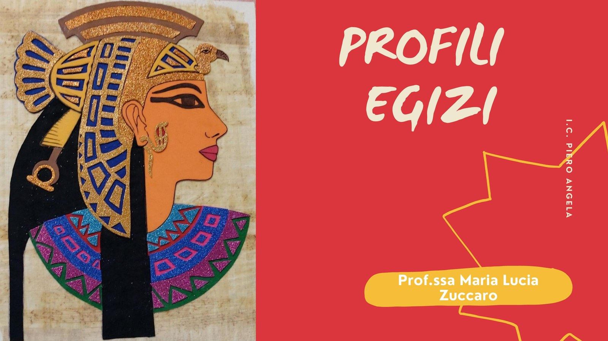

Fotografia di profilo
Scattare una fotografia nella tipica posizione laterale delle raffigurazioni egizie e ritagliarla con precisione.
Classi prime • arte egizia
Il laboratorio parte da una fotografia di profilo e la trasforma in un ritratto ispirato all’arte egizia. Attraverso collage, disegno e decorazione, gli studenti progettano copricapo e pettorina, aggiungono il proprio nome in scrittura geroglifica e riflettono sulle convenzioni della rappresentazione egizia.

Due versioni della presentazione
Le due presentazioni illustrano la costruzione dell’elaborato e offrono riferimenti per copricapi, pettorine, simboli e scrittura geroglifica.
Procedimento essenziale
Scattare una fotografia nella tipica posizione laterale delle raffigurazioni egizie e ritagliarla con precisione.
Incollare il profilo su un foglio F4 giallino oppure su carta da pacco delle stesse dimensioni.
Realizzare con il collage una pettorina e un copricapo ispirati a faraoni e divinità egizie.
Aggiungere il nome in geroglifico e sottolineare l’occhio con il tipico trucco egizio.
Fonte di ispirazione
Il percorso prende spunto anche dalla lezione Egyptian Portrait Art Lesson pubblicata da Leah Newton Art, che propone un ritratto egizio di profilo ottenuto combinando fotografia, disegno e decorazione. L’attività è stata successivamente adattata alle esigenze delle classi e al programma di Arte e Immagine.
Consulta la fonte di ispirazione ↗